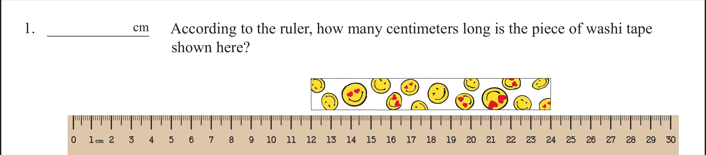
According to the ruler, how many centimeters long is the piece of washi tape shown here? 0 1 2 3 4 5 24 25 6 7 8 9 10 26 27 28 29 30 11 12 13 14 15 16 17 18 19 20 21 22 23 cm cm
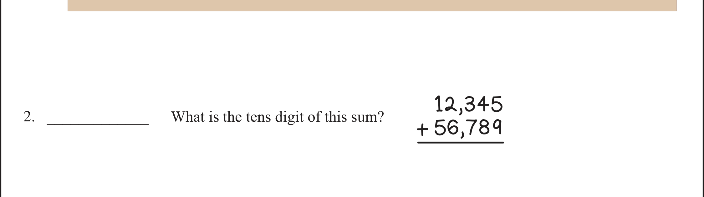
What is the tens digit of this sum? 12,345 56,789 +
Dora drinks a 12-ounce can of cola. Erika drinks half of a 20-ounce bottle of cola. How many more ounces of cola does Dora drink than Erika? ounces
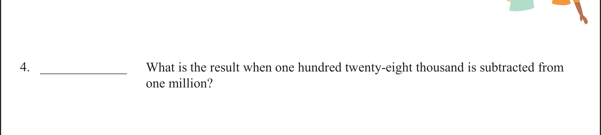
What is the result when one hundred twenty-eight thousand is subtracted from one million?
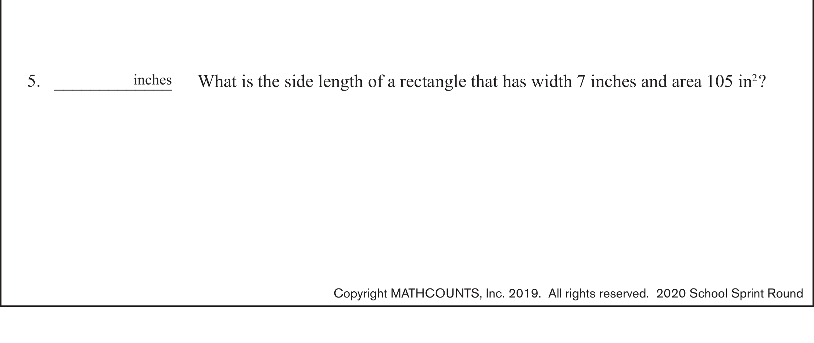
What is the side length of a rectangle that has width 7 inches and area 105 in 2 ? inches
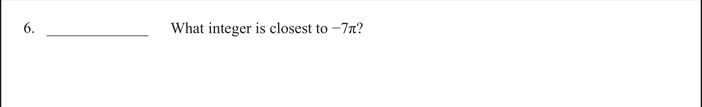
What integer is closest to −7π?
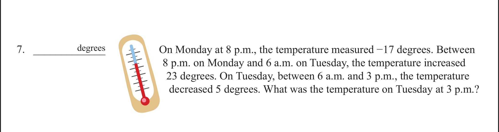
On Monday at 8 p.m. , the temperature measured −17 degrees. Between 8 p.m. on Monday and 6 a.m. on Tuesday, the temperature increased 23 degrees. On Tuesday, between 6 a.m. and 3 p.m., the temperature decreased 5 degrees. What was the temperature on Tuesday at 3 p.m.? degrees
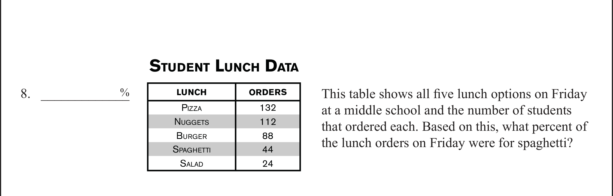
This table shows all five lunch options on Friday at a middle school and the number of students that ordered each. Based on this, what percent of the lunch orders on Friday were for spaghetti? P IZZA S PAGHETTI B URGER 132 LUNCH ORDERS 112 88 44 24 N UGGETS S ALAD S TUDENT L UNCH D ATA %
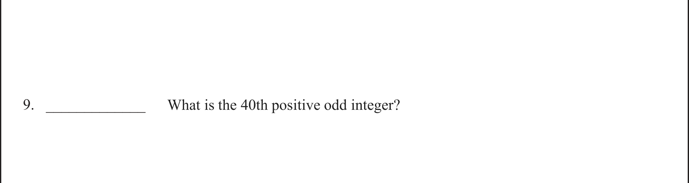
What is the 40th positive odd integer?
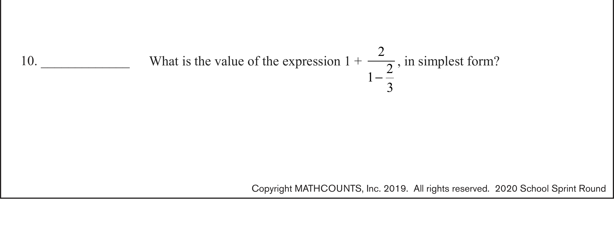
What is the value of the expression 1 + 2 1 2 3 − , in simplest form?
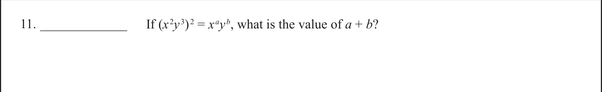
If ( x 2 y 3 ) 2 = x a y b , what is the value of a + b ?
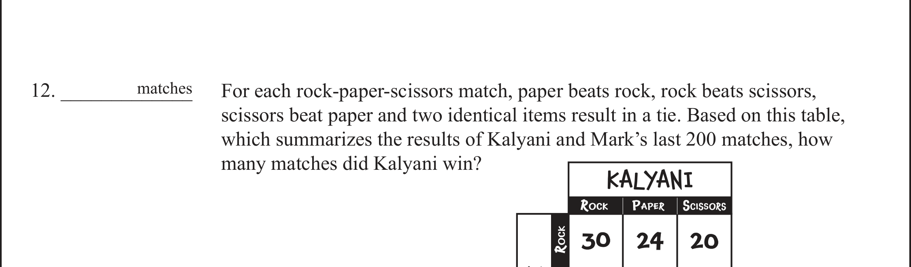
For each rock-paper-scissors match, paper beats rock, rock beats scissors, scissors beat paper and two identical items result in a tie. Based on this table, which summarizes the results of Kalyani and Mark’s last 200 matches, how many matches did Kalyani win? matches
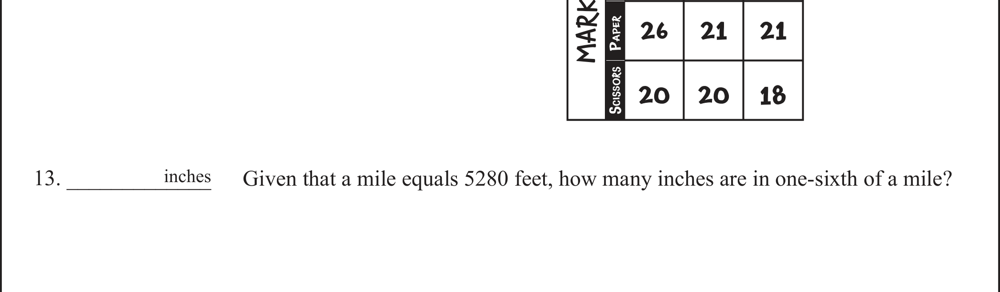
Given that a mile equals 5280 feet, how many inches are in one-sixth of a mile? inches
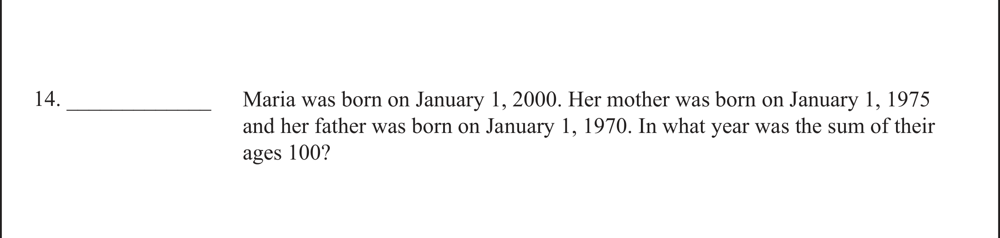
Maria was born on January 1, 2000. Her mother was born on January 1, 1975 and her father was born on January 1, 1970. In what year was the sum of their ages 100?
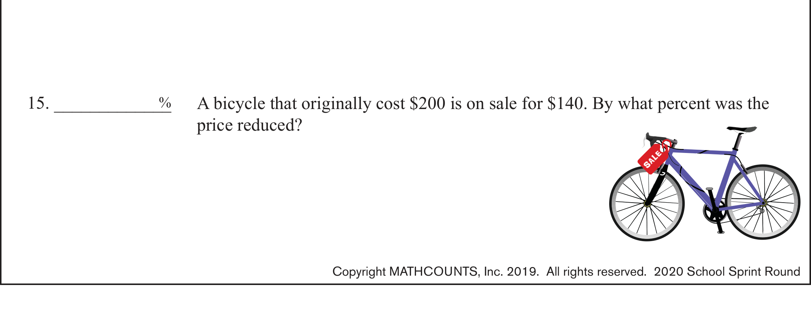
A bicycle that originally cost $200 is on sale for $140. By what percent was the price reduced? SALE %
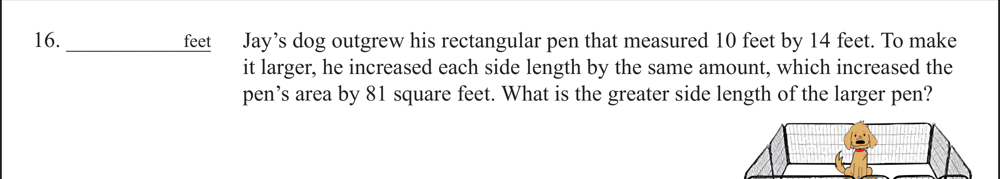
Jay’s dog outgrew his rectangular pen that measured 10 feet by 14 feet. To make it larger, he increased each side length by the same amount, which increased the pen’s area by 81 square feet. What is the greater side length of the larger pen? feet
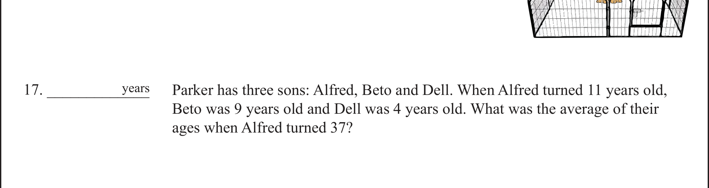
Parker has three sons: Alfred, Beto and Dell. When Alfred turned 11 years old, Beto was 9 years old and Dell was 4 years old. What was the average of their ages when Alfred turned 37? years
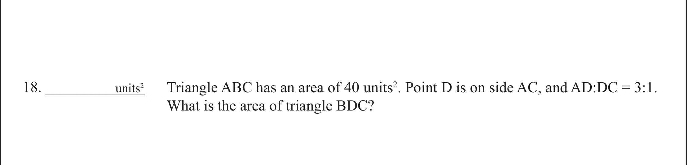
Triangle ABC has an area of 40 units 2 . Point D is on side AC, and AD:DC = 3:1. What is the area of triangle BDC? units 2
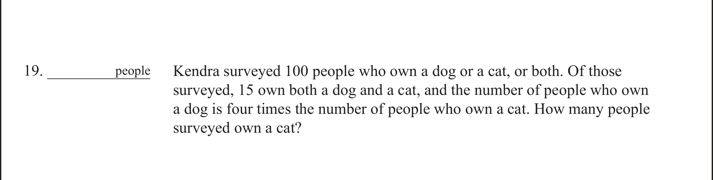
Kendra surveyed 100 people who own a dog or a cat, or both. Of those surveyed, 15 own both a dog and a cat, and the number of people who own a dog is four times the number of people who own a cat. How many people surveyed own a cat? people
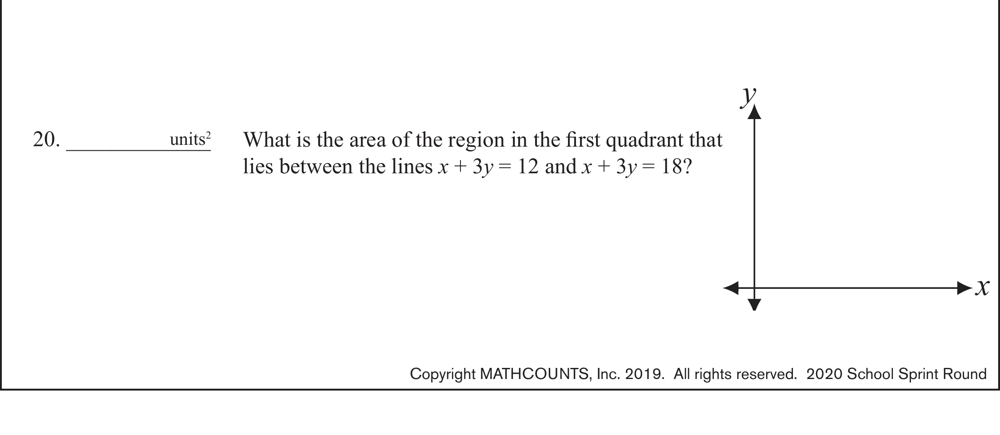
What is the area of the region in the first quadrant that lies between the lines x + 3 y = 12 and x + 3 y = 18? x y units 2
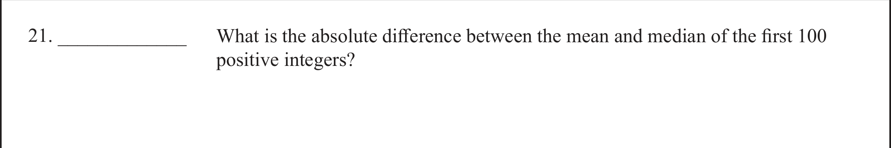
What is the absolute difference between the mean and median of the first 100 positive integers?
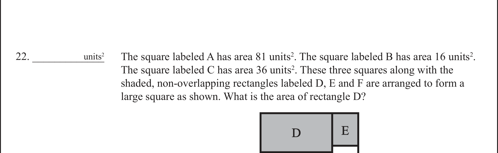
The square labeled A has area 81 units 2 . The square labeled B has area 16 units 2 . The square labeled C has area 36 units 2 . These three squares along with the shaded, non-overlapping rectangles labeled D, E and F are arranged to form a large square as shown. What is the area of rectangle D? units 2 D E
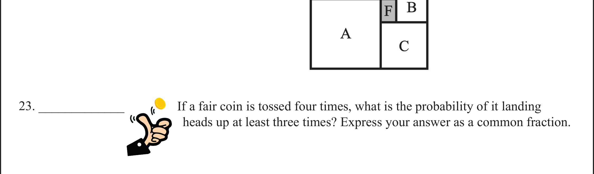
If a fair coin is tossed four times, what is the probability of it landing heads up at least three times? Express your answer as a common fraction. F A B C
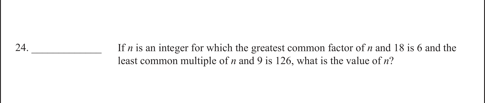
If n is an integer for which the greatest common factor of n and 18 is 6 and the least common multiple of n and 9 is 126, what is the value of n ?
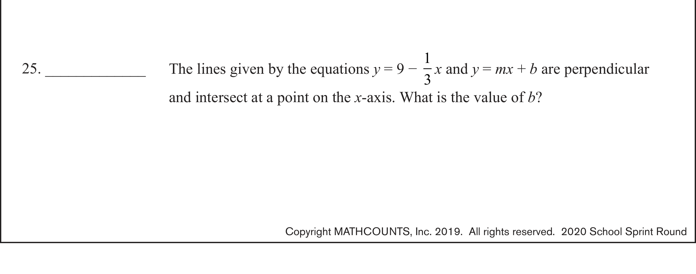
The lines given by the equations y = 9 − 1 3 x and y = mx + b are perpendicular and intersect at a point on the x -axis. What is the value of b ?
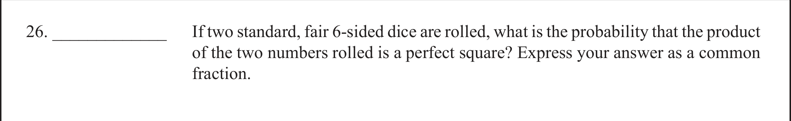
If two standard, fair 6-sided dice are rolled, what is the probability that the product of the two numbers rolled is a perfect square? Express your answer as a common fraction.
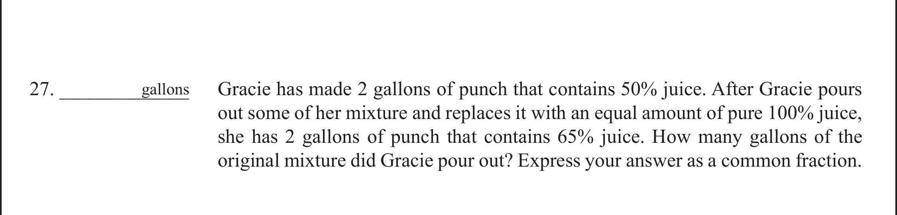
Gracie has made 2 gallons of punch that contains 50% juice. After Gracie pours out some of her mixture and replaces it with an equal amount of pure 100% juice, she has 2 gallons of punch that contains 65% juice. How many gallons of the original mixture did Gracie pour out? Express your answer as a common fraction. gallons
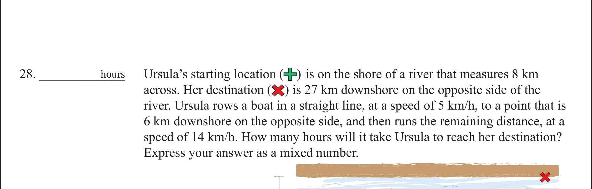
Ursula’s starting location ( ) is on the shore of a river that measures 8 km across. Her destination ( ) is 27 km downshore on the opposite side of the river. Ursula rows a boat in a straight line, at a speed of 5 km/h, to a point that is 6 km downshore on the opposite side, and then runs the remaining distance, at a speed of 14 km/h. How many hours will it take Ursula to reach her destination? Express your answer as a mixed number. hours
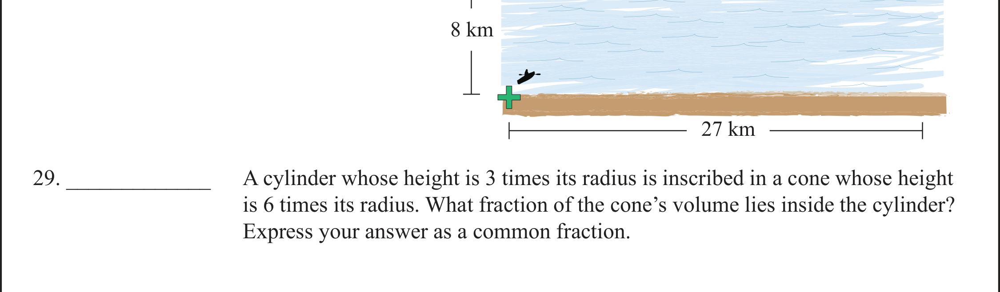
A cylinder whose height is 3 times its radius is inscribed in a cone whose height is 6 times its radius. What fraction of the cone’s volume lies inside the cylinder? Express your answer as a common fraction. 8 km 27 km
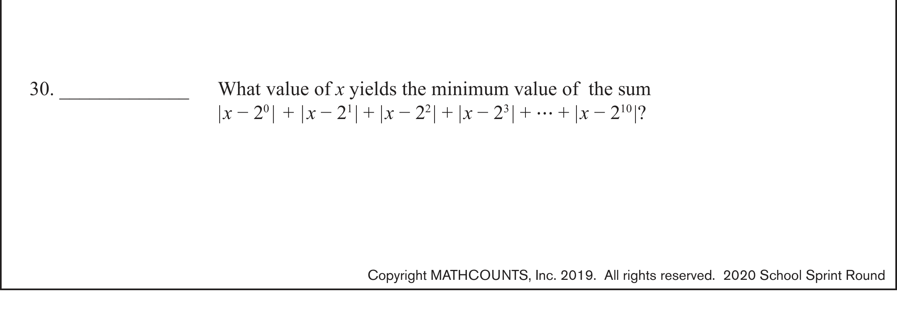
What value of x yields the minimum value of the sum | x − 2 0 | + | x − 2 1 | + | x − 2 2 | + | x − 2 3 | + ⋯ + | x − 2 10 |?